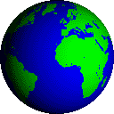

M.Sc
The Magnitude and Frequency of Landslides in the Southern Alps, New Zealand
Under the supervision of Dr. Duna Roda-Boluda
This project invetigated how tectonic uplift and intense rainfall shape the landscape of New Zealand's Southern Alps. By using historical orthophotos and recent satellite data, over 2,700 landslides were mapped spanning a total of 70 years, which allowed us to analyse how their frequency, size, and triggering mechanisms have evolved. The results indicate a shift from large, infrequent failures toward smaller, more frequent events, reflecting the climatic and tectonic influence on landscape evolution. The landslide data also allowed for the calculation of first order multi-decadal landslide-derived erosion rates which were compared against various environmental and geological variables.
Key findings:
- Erosion rates in the range 0.09-0.51 mm/yr, peaking at 5-10 km from the Alpine Fault
- Fault throw rates strongly correlate with landslide-derived erosion (R² = 0.97)
- Short, high-intensity precipitation is believed to be a primary triggering
- Decreases in median landslide area since the 1960s, with smaller, more infrequent landslides dominating
Constraining Landslide Rates, Controls, and Spatial Distributions in Southern Calabria, Italy
Under the supervision of Drs. Benjamin Campforts and Duna Roda-Boluda, and PhD Candidate Amber Distelbrink
This project explored how rainfall patterns, topographic structure, and lithological factors influence landslide activity across Reggio Calabria province in southern Italy. A multi-temporal landslide inventory was built and derived from satelltie imagery from 2000 to 2024, where landslide frequency, magnitude, and spatial distribution were quantified under changing climatic conditions. Advanced GIS and Google Earth Engine workflows were employed to assess relationships between slope aspect, vegetation cover (NDVI), precipitation intensity, and failure mechanisms. By integrating morphometric data with climatic factors from ERA5 and Landsat vegetation data, this thesis provided an updated
perspective on how these Mediterranean landscapes respond to seasonal hydrometeorological forcing in a tectonically active setting.
Key findings:
- Landslide density increases between 2012 and 2024, particularly on south- and east-facing slopes
- Weak, fractured lithologies (particularly phyllites and schists) exhibited higher susceptibility to shallow failures compared to more coherent carbonate units.
- Mean annual precipitation rose by up to ~25% over the 24-year period, coinciding with a higher proportion of shallow, rainfall triggered landslides
- Vegetation recovery rates were slower on steep metamorphic terrain, suggesting a limited slope resilience
- Volume-area scaling indicated an exponent of ~1.28 (γ), consistent with existing literature
PhD Landscape Response to a Changing Climate in the Eastern Alps: Analysing Big Data for past, present, and future conditions. Under the supervision of Dr. Jörg Robl This PhD project will explore how the landscape of the Eastern Alps responds to a changing climate. Using geospatial and computational methods, this research will aim to understand the interplay of climatic and geological factors, and their impact on the evolution of the Earth's surface. Over recent decades, vast datasets from satellite sensors and field observations have captured these changes in great detail. However, predicting how these coupled geomorphological systems will evolve is poorly constrained. Tentative Methodology The project seeks to identify and predict landscape sensitivity. Here, we will leverage the use of cloud computing platforms (Google Earth Engine) and high-performance computing infrastructure at the University of Salzburg to analyses decades of geospatial data across the Alpine region of the Eastern Alps. Projected research avenues are as follows: - Spatio-temporal Analysis of Environmental Change: quantification of gradients using multi-source geological datasets in Matlab, Google Earth Engine, and Python. - Erosion Potential and Hydrological Response: assessing how changes in temperature and precipitation can influence erosion and sediment transport in Alpine torrents, both historically and under future climate scenarios. - Deep Learning Algorithms for Slope Stability: apply supervised deep learning models and map the sensitivity of Alpine landscapes, highlighting area most vulnerable to critical failure. This may also include the use of a novel, mathematically techincal numerical model, which has been developed by a colleague with the goal of constraining slope stress at the mountain scale.